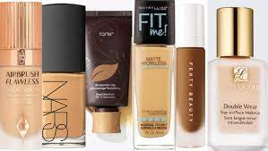

Buy cosmetics & beauty products online from Nykaa, the online shopping beauty store. Browse makeup, health products & more from top beauty brands.

Swiss Beauty High Coverage Waterproof Base Foundation, Face Makeup, Rose-Blush, 60G. ₹999.00. RBR ENTERPRISES 3 in 1 CC and BB Water Proof Foundation Concealer Cream with Air Cushion Mushroom (A11) ₹999.00. SUNISA BB and CC Cream Foundation With Mushroom Head Air Cushion 20g and 1 The Matte Fixer
FDA regulates products that we think of as “makeup” –such as lipstick, blush, foundation, face powder, eye shadow eye liner, and mascara--as cosmetics under the Federal Food, Drug, and Cosmetic Act.
The law does not require cosmetic products and ingredients (except for color additives not intended as coal-tar hair dyes) to have FDA approval before they go on the market, but it does require them to be safe when consumers use them according to their labeling, or as they are customarily used. Also, any color additives used in cosmetics must be approved by FDA.
FDA regulates products that we think of as “makeup” –such as lipstick, blush, foundation, face powder, eye shadow eye liner, and mascara--as cosmetics under the Federal Food, Drug, and Cosmetic Act.
The law does not require cosmetic products and ingredients (except for color additives not intended as coal-tar hair dyes) to have FDA approval before they go on the market, but it does require them to be safe when consumers use them according to their labeling, or as they are customarily used. Also, any color additives used in cosmetics must be approved by FDA.
This div element has position: relative;
This div element has position: absolute;